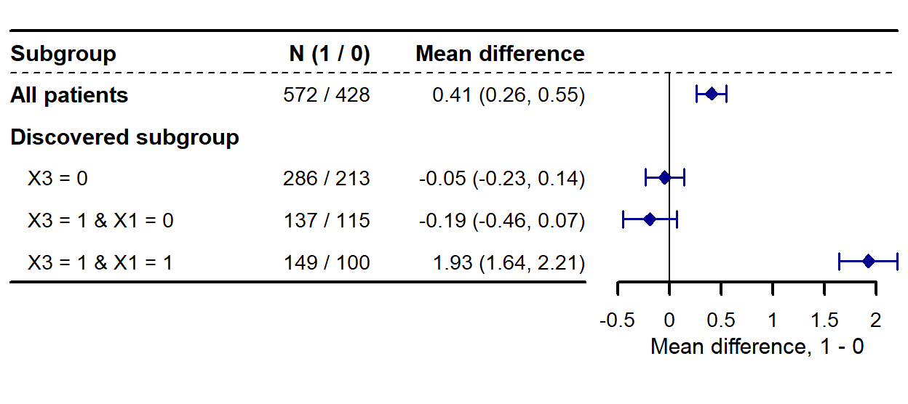
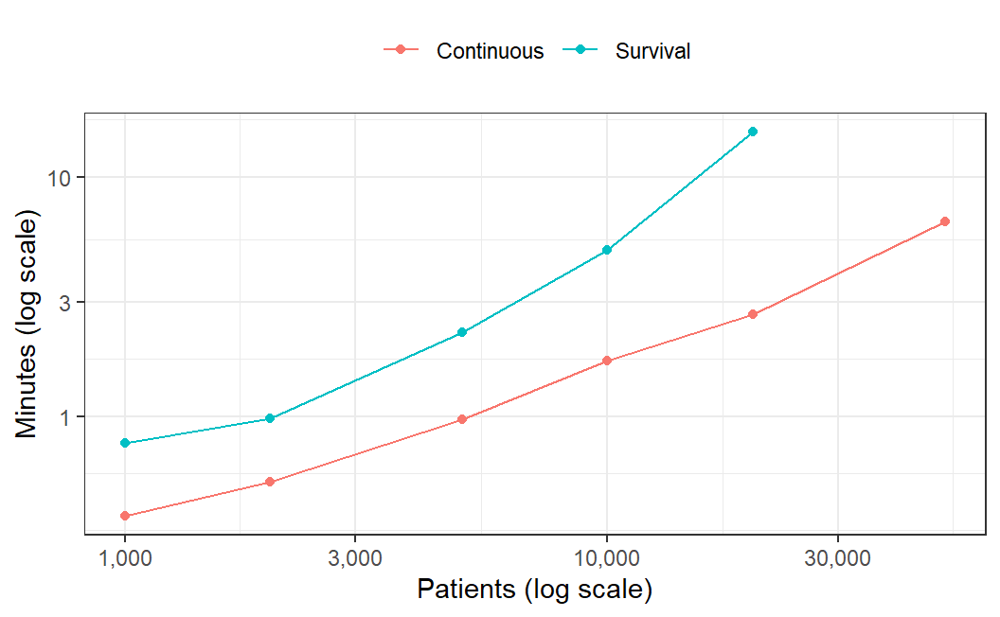

set.seed(20260928)
n <- 2000
d <- data.frame(X1 = rbinom(n, 1, 0.5), X2 = rnorm(n),
X3 = rbinom(n, 1, 0.5), X4 = rnorm(n),
X5 = rnorm(n), X6 = rbinom(n, 1, 0.3))
d$z <- rbinom(n, 1, plogis(0.4 * d$X1 - 0.3 * d$X2))
d$tau <- 2 * d$X1 * d$X3 # 真值，只用来核对
d$y <- d$X2 + d$z * d$tau + rnorm(n)5. 亚组规则发现：get_hte_icf()
causalR 包函数手册
第 1 页的 plt_hte_sub() 回答”事先划定的亚组各自效应多大”。 get_hte_icf() 回答的是前一个问题：亚组该怎么划——不预设交互项，直接从数据里 找出 X3 = 1 & X1 = 1 这样的规则，再在没参与寻找的另一半患者上估计每条规则的 双稳健效应。算法按 Wang 等（2024）的迭代因果森林（iterative causal forest, iCF） 重写，做了几处有模拟依据的改动（见 规则是怎么定出来的）。
data ──split_frac──┬─ 发现集 ─┬─ 5 折交叉验证：每折重跑下面整套，选深度（含 0 = 不分亚组）
│ └─ 全发现集：get_hte() → 筛变量 → 20 个因果森林
│ → 每棵树截断到候选深度、诚实剪枝 → 每个森林投一票
│ 校准检验 p > gate 时一律判为"不分亚组"
└─ 估计集 ──► 按规则分组 → get_hte() 双稳健效应 → plt_hte_sub()get_hte_icf() |
get_hte() + plt_hte_sub() |
get_hte_select() |
|
|---|---|---|---|
| 亚组从哪来 | 从数据里找出规则 | 你事先划定 | 不给亚组，只给变量排序 |
| 推断 | 诚实：找规则与估计效应用不同患者 | 诚实（亚组事先定） | 训练集得分摘要，非效应估计 |
| 代价 | 估计集只有一半患者，区间更宽 | 亚组要有先验 | 需要已算好的倾向得分 |
| 输出 | hte_icf，其中 $est 是 hte_res |
hte_res / ggplot |
普通列表 |
安装与核对环境
remotes::install_github("HUI950319/causalR")
install.packages(c("grf", "forestplot", "ggplotify")) # 森林；画亚组图本页核对于 2026 年 9 月 29 日。示例的代码块由本站渲染时真实执行； 模拟与耗时两节读取事先跑好的结果文件（脚本见 模拟脚本），因为完整重跑要一个多小时。
| 项目 | 值 |
|---|---|
| causalR | 0.0.0.9000（GitHub main，提交 b6582b5） |
| grf | 2.6.1 |
| R | Windows 4.4.3 |
| 机器 | Intel Core Ultra 9 275HX（24 核）、128 GB 内存 |
示例：只有 X1、X3 同时为 1 的人获益
2000 名患者、6 个协变量（X1、X3、X6 二分类，X2、X4、X5 正态）。 治疗分配受 X1、X2 影响（有混杂），X2 同时影响结局； 真实效应只在 X1 = X3 = 1 的约四分之一患者身上为 2，其余人为 0：
默认设置（20 个森林 × 200 棵树 × 5 折）调用一次：
t0 <- Sys.time()
res <- get_hte_icf(d, cat_var = "z", adj_var = paste0("X", 1:6), surv = "y")
t_fit <- as.numeric(difftime(Sys.time(), t0, units = "secs"))
res
#> <hte_icf> iterative causal forest (causal_forest, grf 2.6.1)
#> discovery n = 1000, estimation n = 1000; 5-fold CV; 20 forests x 200 trees per run
#> screened: X3, X1, X5, X4; discovery calibration p = 1.83e-36
#> selected depth = 2 (vote share 0.65)
#>
#> Cross-validated loss:
#> depth n_leaf cv_loss std.error selected
#> 0 1 5.289 0.2839 FALSE
#> 1 2 4.973 0.2786 FALSE
#> 2 3 4.460 0.2629 TRUE
#> 3 3 4.460 0.2629 FALSE
#>
#> Rules, estimated on the estimation part (ATE difference, 95% CI):
#> rule n_disc n estimate conf.low conf.high p.value
#> X3 = 0 502 499 -0.0489 -0.235 0.1369 6.06e-01
#> X3 = 1 & X1 = 0 238 252 -0.1935 -0.456 0.0688 1.48e-01
#> X3 = 1 & X1 = 1 260 249 1.9265 1.644 2.2093 1.18e-40
#> P for interaction = 4.56e-34本机这次调用用了 30 秒。打印结果从上到下：
- 发现集与估计集各 1000 人；筛变量后留下的协变量；发现集森林的校准检验 p 值 （校准检验闸门 的闸门看的就是它）。
- 交叉验证损失：用训练折找出的划分，预测留出折患者的 AIPW 得分， 均方误差最小的深度胜出；深度 0 就是”不分亚组”。深度 3 与深度 2 找到的是同一个划分时， 报告较浅的那个。
- 规则：每条规则在估计集上的双稳健效应（均值差）与 95% 区间， 以及”各规则效应相等”的检验 P for interaction。
和真值对照——估计集上每条规则的真实平均效应：
truth <- tapply(res$est$data$tau, res$est$data$.rule, mean)
data.frame(rule = res$rules$rule, truth = f2(truth[res$rules$rule]),
estimate = f2(res$rules$estimate),
ci = paste0("(", f2(res$rules$conf.low), ", ",
f2(res$rules$conf.high), ")"))
#> rule truth estimate ci
#> 1 X3 = 0 0.00 -0.05 (-0.23, 0.14)
#> 2 X3 = 1 & X1 = 0 0.00 -0.19 (-0.46, 0.07)
#> 3 X3 = 1 & X1 = 1 2.00 1.93 (1.64, 2.21)$est 是估计集上的 get_hte() 结果，.rule 列就是每个人的规则， 所以亚组森林图直接交给 plt_hte_sub()。.rule 不是森林协变量，函数会提示这一点； 这里它是协变量的函数，估计成立。label_column_list 改掉 .rule 这个行名：
plt_hte_sub(res$est, sub_var = ".rule",
label_column_list = c(.rule = "Discovered subgroup"),
xlim = c(-0.5, 2.5), ticks_at = seq(-0.5, 2, 0.5))
读输出
res$vote
#> # A tibble: 3 × 4
#> depth n_leaf share partition
#> <int> <int> <dbl> <chr>
#> 1 1 2 1 X3 = 0 | X3 = 1
#> 2 2 3 0.65 X3 = 0 | X3 = 1 & X1 = 0 | X3 = 1 & X1 = 1
#> 3 3 3 0.65 X3 = 0 | X3 = 1 & X1 = 0 | X3 = 1 & X1 = 1
res$importance
#> # A tibble: 6 × 6
#> variable importance n_col df p_het screened
#> <chr> <dbl> <int> <int> <dbl> <lgl>
#> 1 X3 0.475 1 1 4.83e-16 TRUE
#> 2 X1 0.241 1 1 3.27e-10 TRUE
#> 3 X5 0.100 1 2 4.78e- 1 TRUE
#> 4 X4 0.0877 1 2 3.52e- 1 TRUE
#> 5 X2 0.0847 1 2 6.17e- 1 FALSE
#> 6 X6 0.0109 1 1 8.35e- 1 FALSE| 元素 | 内容 |
|---|---|
$rules |
选中深度的每条规则：rule、发现集人数 n_disc，以及估计集上的 n、n_treat、estimate、std.error、conf.low、conf.high、p.value、p_inter（与 get_hte()$subgroup 同口径，95% Wald 区间） |
$cv |
每个深度（含 0）一行：全发现集上找到的划分有几组 n_leaf、交叉验证损失 cv_loss 及其标准误、selected |
$vote |
每个候选深度一行：胜出划分的得票率 share（20 个森林里有几成投给它，即稳定性）与划分本身 |
$importance |
发现集 get_hte() 的变量重要性与 p_het，screened 标出投票森林实际用了哪些变量 |
$est |
估计集上的 hte_res，可交给全部 plt_hte_*() |
attr(res, "analysis") 里另有发现集的行号（discovery）、全部设置、 校准 p 值 calibration_p 与闸门是否关上 gated。
规则是怎么定出来的
最终报告的那组规则要过四关：在发现集上为每个候选深度找出一个划分 → 交叉验证在这些深度（加上深度 0）里挑一个 → 校准检验闸门决定到底报不报亚组 → 在估计集上估计每条规则的效应。每一关都能在结果对象里查到（在示例上逐步对照）。
第 0 步：拆样本
在治疗组、对照组内各自随机抽 split_frac（默认一半）作发现集，其余作估计集； 发现集再按臂分层分成 n_folds（5）折。规则只在发现集上找，效应只在估计集上估。
第 1 步：为每个深度找一个候选划分
一次”发现”在一组患者上依次做：
拟合一个因果森林：
get_hte()给出袋外的结局与倾向得分估计、每人的 AIPW 得分 \(\Gamma_i\)（个体层面的双稳健效应，平均起来就是 ATE）、变量重要性， 以及校准检验。筛变量（iCF 的做法，
screen = TRUE）：留下重要性不低于均值的协变量，至少 4 个。种投票森林：复用第 1 步的结局与倾向得分估计，在留下的变量上种
n_forest（20）个 因果森林，每个num_trees（200）棵树。给每棵树、每个候选深度打分。先把树截断到该深度（更深的节点当叶子）， 再自下而上剪枝。节点 \(A\) 的损失是其中 AIPW 得分的平方误差，按 iCF 代码乘上 小样本放大系数： \[L(A)=\frac{m_A^2}{(m_A-1)^2}\sum_{i\in A}\big(\Gamma_i-\bar\Gamma_A\big)^2 ,\] 一个分裂保留，当且仅当两个子节点（各自剪完之后）的损失加上罚项仍低于父节点： \[L(\text{左})+L(\text{右})+3.84\,\hat\sigma^2<L(\text{父}),\qquad \hat\sigma^2=\frac{1}{m-1}\sum_{i}\big(\Gamma_i-\bar\Gamma\big)^2 .\] \(\hat\sigma^2\) 是全部评估患者得分的方差，3.84 是 \(\chi^2_1\) 的 95% 分位数—— 相当于用 5% 水平检验两个子节点的平均效应是否不同，每多保留一刀就要付一次这个价。 此外两个子节点须各占至少
min_leaf（5%）的评估患者、每臂至少 2 人，否则不切。所有求和只用这棵树没拿来选切点的患者：grf 诚实样本里负责叶内估计的那一半， 加上这棵树没抽到的人（默认设置下约四分之三）。剪完后，根节点损失减去剪枝后的总损失 （按人平均）就是这棵树在该深度上的增益。
每个森林投一票：每个深度、每个森林取增益最大的那棵树。票按划分计：只比较 每组用了哪些变量、取哪些水平或方向，不比较连续变量切点的具体数值，也不管先切哪个变量。 得票最多的划分胜出（
$vote$share是它的得票率）；它的代表树取胜出票里最常见的树形， 连续切点取中位数。
于是每个候选深度得到一个划分。剪枝让深度只是上限：深度 2 的树可以只剩三组 （没有效应的那一枝不再切，如示例），也可以一刀都不剩。
第 2 步：交叉验证只挑深度
候选是深度 0（全体患者一组）加上第 1 步每个深度的划分。对发现集的每一折 \(k\)：
- 在其余折上从第 1 步整套重跑（
get_hte()的辅助模型也重估），得到每个深度的树； - 每组的预测值取这些训练折患者在该组的平均 AIPW 得分 \(\hat\mu_{d,-k}(x)\) （深度 0 就是训练折的总平均）；
- 留出折的每个人计算 \(\big(\Gamma_i-\hat\mu_{d,-k}(x_i)\big)^2\)， \(\Gamma_i\) 取全发现集那次拟合的得分。
各折合起来的平均值就是 $cv$cv_loss，最小者胜出。两条细则：全发现集上剪完只剩一组的 深度不参加比较；更深的深度如果和较浅深度的划分完全相同，记为较浅的那个。
交叉验证评价的是”按深度 \(d\) 这一整套流程去找规则”能不能预测新患者，各折找到的树 可以彼此不同。最终报告的规则来自全发现集上第 1 步那次运行，交叉验证只决定取哪个深度。
第 3 步：校准检验闸门
全发现集那个因果森林的校准检验（differential.forest.prediction 一行，单侧） p 值大于 gate（0.1）时，不管交叉验证选了什么，一律改为深度 0、只报 “All patients”。为什么需要这一步见 校准检验闸门。
第 4 步：在估计集上估计
把选中的树套到估计集，每人得到一个 .rule；在估计集上重新 get_hte()，按 .rule 分组算双稳健效应、95% 区间、各组 p 值和”各组效应相等”的 P for interaction， 这就是 $rules。这些患者没参与找规则，区间与 P 值是诚实的。
在示例上逐步对照
a <- attr(res, "analysis")
a[c("screened", "calibration_p", "gated", "depth_selected")]
#> $screened
#> [1] "X3" "X1" "X5" "X4"
#>
#> $calibration_p
#> [1] 1.829733e-36
#>
#> $gated
#> [1] FALSE
#>
#> $depth_selected
#> [1] 2
res$cv
#> # A tibble: 4 × 5
#> depth n_leaf cv_loss std.error selected
#> <int> <int> <dbl> <dbl> <lgl>
#> 1 0 1 5.29 0.284 FALSE
#> 2 1 2 4.97 0.279 FALSE
#> 3 2 3 4.46 0.263 TRUE
#> 4 3 3 4.46 0.263 FALSE上面示例里，第 1 步的筛选留下 X3、X1、X5、X4； 每个深度的胜出划分与得票率就是 读输出 的 res$vote； 第 2 步交叉验证损失最小的是深度 2 （res$cv 里深度 3 的损失与深度 2 相同：剪枝后两者是同一个三组划分，按细则记为深度 2）； 第 3 步发现集的校准 p < 0.001， 不超过 0.1，闸门放行； 第 4 步 $rules 的 3 条规则，就是深度 2 的胜出划分 在估计集 1000 人上的估计。
相对 iCF 代码的改动
| iCF 代码 | get_hte_icf() |
为什么 | |
|---|---|---|---|
| 损失 | R-loss | AIPW 得分的平方误差 | 生存结局也能用 |
| 控制深度 | 为每个深度手调 min.node.size 分母 |
截断同一批树 | 一套森林服务所有深度 |
| 评估每棵树 | 各树自己的叶内样本（人数各不相同） | 没用来选切点的患者 | 见下 |
| 剪枝门槛 | 只有 \(m^2/(m-1)^2\) 放大 | 另加 3.84 倍方差 | 见下 |
| 投票 | 按树形 | 按划分 | 先切 X1 还是先切 X3 算同一票 |
| 交叉验证 | 各折实际用全样本种树（已实测） | 各折只用训练折 | 不泄漏 |
| “无异质性”闸门 | README 示例的 P_threshold = 1 把它关了 |
校准检验 p ≤ 0.1 才报亚组 | 见 校准检验闸门 |
| 效应估计 | 发现规则的同一批人上 IPTW 回归 | 另一半患者上的双稳健估计 | 诚实推断 |
后三条改动都是开发时被模拟逼出来的（X1–X6 设计，τ = 2·X1·X3，n = 1600）：
- 每棵树在全部发现集上评估时，每个森林的最优树都在”没有效应的那一枝”多切一刀 （5 个森林全是同一刀
X4 ≤ 0.75）——选切点用过的患者让噪声切分显得有收益。 - 诚实评估但不加门槛时，12 个数据集里仍有 5 个留下假切分：每棵树约有一成多的噪声 切分能过 iCF 的剪枝规则，再从 200 棵里挑增益最大的，恰好挑中”真结构 + 一刀噪声”。 加 3.84 倍门槛后 12/12 干净；README 设定下效应较弱的结果逐条不变。
- 闸门见 校准检验闸门。
参数
| 参数 | 默认 | 说明 |
|---|---|---|
data、cat_var、surv、time |
— | 同 get_hte()；surv = TRUE 读 time / DSS 两列 |
adj_var |
— | 森林的协变量，也是写规则用的变量；不能有缺失（规则说不清缺失值该归哪组） |
depth |
1:3 |
候选深度，最多 8 组；深度 0 总在候选里 |
factor_encoding |
"onehot" |
同 get_hte()；两种编码写出的规则一样（如 grp = c、grp != c） |
split_frac |
0.5 |
每臂内用于发现的比例，其余为估计集 |
rule_args |
见下 | 发现设置的命名列表，可局部覆盖 |
grf_args |
list() |
传给每次 get_hte()，以及（除 num.trees、seed 外）投票森林；不收逐行字段（W.hat、Y.hat、sample.weights、clusters） |
seed |
123 |
抽发现集与分折；get_hte() 的种子（除非 grf_args 自带）；第 b 个投票森林用 seed + b；调用结束恢复原随机数状态 |
verbose |
FALSE |
报告拆分、筛选结果与选中的深度 |
rule_args 的字段：
| 字段 | 默认 | 说明 |
|---|---|---|
n_forest |
20 |
每次发现种几个森林，每个投一票 |
num_trees |
200 |
每个投票森林的树数 |
n_folds |
5 |
发现集内交叉验证的折数 |
min_leaf |
0.05 |
最小亚组占比（占找规则那组患者），另需每臂 2 人 |
screen |
TRUE |
按重要性筛变量（不低于均值、至少 4 个）；FALSE 用全部 adj_var |
gate |
0.1 |
校准检验 p 的闸门；1 表示只靠交叉验证 |
模拟：找得准不准
全部用默认设置，每个数据集一次调用。模拟跑在提交 a89dd81 的版本上；此后 b6582b5 修正了一处计票：先切 X1 与先切 X3 的同一个四组划分原先被当成两个划分分票。 只影响这类四组划分的得票率与胜负，模拟没有重跑。四个场景：
| 场景 | 设计 | 真正的修饰 | 次数 |
|---|---|---|---|
| 交互 | 上面示例的设计，n = 1600 | τ = 2·X1·X3 | 20 |
| 无异质性 | 同上，τ = 0.5 | 无 | 20 |
| iCF README | iCF 仓库自带的模拟，10 个协变量 | τ = −0.4 + 0.3·X1 + 0.4·X3 + 0.4·X1·X3 | n = 3000、10000 各 10 |
| 生存 | 示例的协变量；治疗把 X1 = X3 = 1 者的风险乘以 e−1.2，其余人无效应；删失率 0.02，t = 12 | X1·X3 | n = 3000，筛变量开/关各 10 |
| 场景 | n | 筛变量 | 次数 | 报出亚组 | 恰为 X1+X3 | 只有 X1 或 X3 | 含其他变量 | 区间覆盖真值 |
|---|---|---|---|---|---|---|---|---|
| 交互 | 1600 | 开 | 20 | 20/20 | 20/20 | 0/20 | 0/20 | 57/60 |
| 无异质性 | 1600 | 开 | 20 | 1/20 | — | — | 1/20 | 20/21 |
| iCF README | 3000 | 开 | 10 | 10/10 | 5/10 | 5/10 | 0/10 | 24/25 |
| iCF README | 10000 | 开 | 10 | 10/10 | 10/10 | 0/10 | 0/10 | 33/36 |
| 生存 | 3000 | 开 | 10 | 4/10 | 0/10 | 2/10 | 2/10 | 15/15 |
| 生存 | 3000 | 关 | 10 | 6/10 | 5/10 | 0/10 | 1/10 | 20/21 |
“含其他变量”数的是规则里出现 X1、X3 以外变量的次数；“区间覆盖真值”把所有次模拟里 每条规则的 95% 区间与估计集上该组的真实平均效应比对。
- 交互：20/20 次恰好只切 X1、X3，全部是三组划分（
X1 = 0、X1 = 1 & X3 = 0、X1 = 1 & X3 = 1，或先切 X3 的 对称写法）——没有效应的两组没有被再切开。 - 无异质性：1/20 次报出了亚组（按 X5 切一刀，那次发现集的校准 p = 0.068， 刚好过了 0.1 的闸门）。估计集上它的 P for interaction = 0.62：诚实估计本身就不支持这个亚组， 这正是拆样本的意义。
- iCF README：真效应在 X3 = 0 为 −0.4 与 −0.1、X3 = 1 为 0 与 0.7，X3 一刀就解释了 大部分差异。n = 10000 时 10/10 次切出 X1、X3；n = 3000（发现集 1500 人）时次次报出亚组，但 5/10 次只切 X3——X1 那一刀在样本小时不稳。
- 生存：最难。筛变量开着时 4/10 次报出亚组， 一次都没同时切出 X1、X3，还有 2 次带进了噪声变量；关掉筛选（
rule_args = list(screen = FALSE)）后 5/10 次恰为 X1、X3。原因在筛选： 生存森林的变量重要性偏爱取值多的连续变量，“不低于均值、至少 4 个”的名额被 X2、X4、X5 占走，二分类的 X3 或 X1 就进不了投票森林（开发时的单次调用里， n = 2000 和 4000 两次都是 X3 被筛掉）。 - 区间：全部 178 条规则里，169 条 （95%）的 95% 区间覆盖了 估计集上该组的真实平均效应。
校准检验闸门
同一批模拟里，把闸门关掉（rule_args = list(gate = 1)，只看交叉验证）会怎样—— 结果对象里存着每个深度的交叉验证损失，关掉闸门时的选择可以直接算出来：
| 场景 | n | 筛变量 | 只靠交叉验证：报出亚组 | 加闸门：报出亚组 | 闸门拦下 | 校准 p 最大值 |
|---|---|---|---|---|---|---|
| 交互 | 1600 | 开 | 20/20 | 20/20 | 0/20 | 0.0000 |
| 无异质性 | 1600 | 开 | 2/20 | 1/20 | 1/20 | 1.0000 |
| iCF README | 3000 | 开 | 10/10 | 10/10 | 0/10 | 0.0029 |
| iCF README | 10000 | 开 | 10/10 | 10/10 | 0/10 | 0.0000 |
| 生存 | 3000 | 开 | 4/10 | 4/10 | 0/10 | 0.5500 |
| 生存 | 3000 | 关 | 7/10 | 6/10 | 1/10 | 0.5500 |
闸门是论文原有的一步：发现集上原始森林的校准检验（get_hte()$calibration 里 differential.forest.prediction 那一行，单侧）p ≤ 0.1 才去报亚组。 无异质性时它把只靠交叉验证的 2/20 次误报 压到 1/20；连续结局有真实修饰时，校准 p 最大也只有 0.0029， 闸门一次也没挡。生存结局的校准检验功效低得多（p 最大到 0.55），闸门也会挡掉真信号—— 想只靠交叉验证判断时用 rule_args = list(gate = 1)。
耗时
默认设置、一次调用、本机单独运行（没有其他计算任务）。连续结局用示例的设计， 生存结局用上面生存场景的设计：
| 结局 | n | 发现集 | 耗时（秒） | 耗时（分） | 选中深度 | 规则 |
|---|---|---|---|---|---|---|
| 连续 | 1,000 | 500 | 23 | 0.4 | 2 | X1 = 0 | X1 = 1 & X3 = 0 | X1 = 1 & X3 = 1 |
| 连续 | 2,000 | 1,000 | 32 | 0.5 | 2 | X1 = 0 | X1 = 1 & X3 = 0 | X1 = 1 & X3 = 1 |
| 连续 | 5,000 | 2,500 | 58 | 1.0 | 2 | X1 = 0 | X1 = 1 & X3 = 0 | X1 = 1 & X3 = 1 |
| 连续 | 10,000 | 5,000 | 102 | 1.7 | 2 | X1 = 0 | X1 = 1 & X3 = 0 | X1 = 1 & X3 = 1 |
| 连续 | 20,000 | 10,000 | 161 | 2.7 | 2 | X1 = 0 | X1 = 1 & X3 = 0 | X1 = 1 & X3 = 1 |
| 连续 | 50,000 | 25,000 | 390 | 6.5 | 2 | X3 = 0 | X3 = 1 & X1 = 0 | X3 = 1 & X1 = 1 |
| 生存 | 1,000 | 500 | 46 | 0.8 | 0 | All patients |
| 生存 | 2,000 | 1,000 | 59 | 1.0 | 1 | X1 = 0 | X1 = 1 |
| 生存 | 5,000 | 2,500 | 134 | 2.2 | 1 | X1 = 0 | X1 = 1 |
| 生存 | 10,000 | 5,000 | 298 | 5.0 | 2 | X1 = 0 | X1 = 1 & X3 = 0 | X1 = 1 & X3 = 1 |
| 生存 | 20,000 | 10,000 | 927 | 15.4 | 2 | X1 = 0 | X1 = 1 & X3 = 0 | X1 = 1 & X3 = 1 |

- 连续结局：1000 例 23 秒，5000 例 58 秒， 2 万例 2.7 分钟，5 万例 6.5 分钟。 小样本时的”底价”来自固定开销：一次调用要做 7 次
get_hte()（全发现集、5 个训练折、 估计集）和 120 个投票森林（20 个 × 6 次发现），逐树的截断与剪枝是 R 单线程代码， 24 核里平均只用上两三个。发现集超过 1 万人（总样本 2 万以上）时get_hte()自动改种 200 棵树，所以 5 万例并没有按比例变慢。 - 生存结局贵得多：
causal_survival_forest()每种一个投票森林都要重估生存与删失曲线。 1000 例 46 秒，1 万例 5.0 分钟， 2 万例 15.4 分钟。 事件数超过样本 10% 时 grf 会反复提示改用更粗的时间网格；单次实测 1 万例传grf_args = list(failure.times = seq(0, 12, by = 0.5))从 298 秒降到 118 秒， 但那一次只找出了 X1（不加网格时是 X1、X3），网格对识别的影响没有做成批模拟。
想更快，按影响从大到小：减 rule_args 的 n_forest（投票数，默认 20）和 n_folds （默认 5，每少一折少一次完整发现）；给 get_hte() 的森林减树（grf_args = list(num.trees = 500)）； 生存结局加 failure.times 网格。帮助页 ?get_hte_icf 的示例用 rule_args = list(n_forest = 5, num_trees = 100, n_folds = 3)，1600 例连续结局 约 6 秒，也找对了规则，但得票率只有 5 档，稳定性读数很粗。
读结果的规矩
- 效应看
$rules，别在全样本上对着规则重估。 规则是在发现集上”找”出来的， 同一批人既找规则又估计，效应和 P 值都会偏乐观；$rules与$est只用了估计集。 - “不分亚组”是正常答案，但不等于没有异质性。 闸门和交叉验证都可能给出深度 0， 生存结局尤其如此（本页生存场景有 4–6 成是深度 0）。
- 看得票率。
$vote$share低于一半说明 20 个森林意见不一，换seed结果可能变； 重要结论可以换几个种子看是否复现。 - 连续变量的切点由数据决定。 取胜出树形的中位数、显示 4 位有效数字； 报告时写明是数据驱动的切点，而不是临床界值。
- 变量不多时考虑关掉筛选。 默认按 iCF 筛到重要性不低于均值、至少 4 个； 本页生存场景里它漏掉了二分类的真修饰变量，
screen = FALSE明显更好。 - 拆样本的代价是区间更宽。 估计集只有一半患者；样本不大时可以调
split_frac，但发现集变小，找到真规则的次数也会少。 - 协变量不能缺失，先插补或删行；多水平因子写成
grp = c、grp != c、grp in {a, b}，两种factor_encoding写法一致。
模拟脚本
上面两节的结果由 notes/causalR/05-hte-icf-sim.R 生成，写入 data/hte_icf_sim.csv 与 data/hte_icf_timing.csv：
# =============================================================================
# 05-hte-icf-sim.R -- 手册第 5 页（get_hte_icf()）的模拟与计时
# =============================================================================
#
# 生成两个文件，页面读取它们作表：
# data/hte_icf_sim.csv 四个场景下的识别结果（每行一次模拟）
# data/hte_icf_timing.csv 不同样本量下一次默认调用的耗时
#
# 全部使用 get_hte_icf() 的默认设置（20 个森林 x 200 棵树 x 5 折），
# 2026-09-28 在 Windows R 4.4.3、grf 2.6.1、Intel Core Ultra 9 275HX
# （24 核）、128 GB 内存上运行。计时部分须单独运行，不与其他任务并行。
#
# 用法（在项目根目录）：
# Rscript notes/causalR/05-hte-icf-sim.R sim # 识别结果，约 1 小时
# Rscript notes/causalR/05-hte-icf-sim.R timing # 耗时，约半小时
# 也可以只跑某个场景：Rscript ... sim inter null
# =============================================================================
library(causalR)
# ---- 数据生成 ----------------------------------------------------------------
# 每个数据集都带真值列 tau：连续结局是个体效应，生存结局是 S1(12) - S0(12)。
# tau 不进 adj_var，只用来核对估计集上的亚组效应。
gen <- function(scenario, n, seed) {
set.seed(seed)
if (scenario == "readme") {
# iCF README 的模拟（Setoguchi 等的设定加上 W:X1:X3 交互）
cor1 <- function(x, rho)
rho * (x - mean(x)) / sd(x) + sqrt(1 - rho^2) * rnorm(length(x))
bin <- function(x) as.numeric(x > mean(x))
X2 <- rnorm(n); X4 <- rnorm(n); X7 <- rnorm(n); X10 <- rnorm(n)
X1 <- bin(rnorm(n)); X3 <- bin(rnorm(n))
X5 <- bin(cor1(X1, 0.2)); X6 <- bin(cor1(X2, 0.9))
X8 <- bin(cor1(X3, 0.2)); X9 <- bin(cor1(X4, 0.9))
z <- rbinom(n, 1, plogis(0.8 * X1 - 0.25 * X2 + 0.6 * X3 - 0.4 * X4 -
0.8 * X5 - 0.5 * X6 + 0.7 * X7))
tau <- -0.4 + 0.3 * X1 + 0.4 * X3 + 0.4 * X1 * X3
y <- -3.85 + 0.3 * X1 - 0.36 * X2 - 0.73 * X3 - 0.2 * X4 + 0.71 * X8 -
0.19 * X9 + 0.26 * X10 + z * tau + 0.2 * X1 * X3 + rnorm(n)
return(data.frame(X1, X2, X3, X4, X5, X6, X7, X8, X9, X10, z, y, tau))
}
# 其余三个场景共用 6 个协变量：X1、X3、X6 二分类，X2、X4、X5 正态
d <- data.frame(X1 = rbinom(n, 1, 0.5), X2 = rnorm(n),
X3 = rbinom(n, 1, 0.5), X4 = rnorm(n),
X5 = rnorm(n), X6 = rbinom(n, 1, 0.3))
d$z <- rbinom(n, 1, plogis(0.4 * d$X1 - 0.3 * d$X2))
if (scenario == "surv") {
# 治疗把 X1 = X3 = 1 者的风险乘以 exp(-1.2)，其余人无效应
rate <- 0.05 * exp(-1.2 * d$z * d$X1 * d$X3)
ev <- rexp(n, rate)
cens <- rexp(n, 0.02)
d$time <- pmin(ev, cens)
d$DSS <- as.integer(ev <= cens)
d$tau <- exp(-0.6 * exp(-1.2 * d$X1 * d$X3)) - exp(-0.6)
return(d)
}
d$tau <- if (scenario == "inter") 2 * d$X1 * d$X3 else rep(0.5, n)
d$y <- d$X2 + d$z * d$tau + rnorm(n)
d
}
# ---- 一次调用，整理成一行 ----------------------------------------------------
one <- function(scenario, n, seed, rule_args = list()) {
d <- gen(scenario, n, seed)
xv <- grep("^X", names(d), value = TRUE)
t0 <- Sys.time()
r <- if (scenario == "surv")
get_hte_icf(d, "z", xv, time = 12, seed = seed, rule_args = rule_args)
else get_hte_icf(d, "z", xv, surv = "y", seed = seed, rule_args = rule_args)
secs <- as.numeric(difftime(Sys.time(), t0, units = "secs"))
a <- attr(r, "analysis")
# 关掉校准闸门、只看交叉验证时会选哪个深度（与 get_hte_icf() 内部同一规则）
txt <- c("", r$vote$partition)
ok <- r$cv$n_leaf > 1 | r$cv$depth == 0
cv_sel <- match(txt[which.min(ifelse(ok, r$cv$cv_loss, Inf))], txt)
vars_of <- function(s) paste(sort(unique(unlist(
regmatches(s, gregexpr("X[0-9]+", s))))), collapse = "+")
# 估计集上每条规则的真值：该组患者 tau 的平均
est <- r$est$data
truth <- tapply(est$tau, est$.rule, mean)[r$rules$rule]
cover <- r$rules$conf.low <= truth & truth <= r$rules$conf.high
data.frame(
scenario = scenario, n = n, seed = seed,
screen = a$rule_args$screen,
depth = a$depth_selected, n_leaf = nrow(r$rules),
vars = vars_of(r$rules$rule),
depth_cv = r$cv$depth[cv_sel], vars_cv = vars_of(txt[cv_sel]),
calib_p = a$calibration_p, gated = a$gated,
share = if (a$depth_selected > 0)
r$vote$share[r$vote$depth == a$depth_selected] else NA_real_,
p_inter = r$rules$p_inter[1L],
n_cover = sum(cover, na.rm = TRUE), max_err = max(abs(r$rules$estimate - truth)),
rules = paste(r$rules$rule, collapse = " | "),
secs = round(secs, 1), stringsAsFactors = FALSE)
}
# 每次调用后追加写入，跑到一半也能看到进度
run <- function(jobs, file) {
for (i in seq_len(nrow(jobs))) {
j <- jobs[i, ]
row <- one(j$scenario, j$n, j$seed,
rule_args = if (isFALSE(j$screen)) list(screen = FALSE) else list())
utils::write.table(row, file, sep = ",", row.names = FALSE,
col.names = !file.exists(file), append = file.exists(file))
message(sprintf("%s n=%d seed=%d screen=%s: depth %d, %s (%.0f s)",
j$scenario, j$n, j$seed, j$screen, row$depth, row$rules,
row$secs))
}
}
args <- commandArgs(trailingOnly = TRUE)
what <- if (length(args)) args[1L] else "sim"
pick <- args[-1L]
if (what == "sim") {
jobs <- rbind(
data.frame(scenario = "inter", n = 1600, seed = 1:20, screen = TRUE),
data.frame(scenario = "null", n = 1600, seed = 1:20, screen = TRUE),
data.frame(scenario = "readme", n = 3000, seed = 1:10, screen = TRUE),
data.frame(scenario = "readme", n = 10000, seed = 1:10, screen = TRUE),
data.frame(scenario = "surv", n = 3000, seed = 1:10, screen = TRUE),
data.frame(scenario = "surv", n = 3000, seed = 1:10, screen = FALSE))
if (length(pick)) jobs <- jobs[jobs$scenario %in% pick, ]
run(jobs, "data/hte_icf_sim.csv")
}
if (what == "timing") {
jobs <- rbind(
data.frame(scenario = "inter", n = c(1000, 2000, 5000, 10000, 20000, 50000),
seed = 1, screen = TRUE),
data.frame(scenario = "surv", n = c(1000, 2000, 5000, 10000, 20000),
seed = 1, screen = TRUE))
if (length(pick)) jobs <- jobs[jobs$scenario %in% pick, ]
run(jobs, "data/hte_icf_timing.csv")
}参考文献
- Wang T, Keil AP, Kim S, Wyss R, Htoo PT, Funk MJ, Buse JB, Kosorok MR, Stürmer T (2024). Iterative causal forest: a novel algorithm for subgroup identification. American Journal of Epidemiology 193(5):764–776.
- Wang T, Pate V, Wyss R, Buse JB, Kosorok MR, Stürmer T (2024). High-dimensional iterative causal forest (hdiCF): a novel algorithm for subgroup identification in claims data. American Journal of Epidemiology, kwae322.
- Athey S, Imbens G (2016). Recursive partitioning for heterogeneous causal effects. Proceedings of the National Academy of Sciences 113(27):7353–7360.
- Athey S, Tibshirani J, Wager S (2019). Generalized random forests. The Annals of Statistics 47(2):1148–1178.
完整说明见包内帮助页 ?get_hte_icf。观察性研究里找效应修饰变量的其他方法， 见本站效应修饰变量识别。